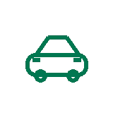

AutoKapitál je řešení pro běžné lidi a domácnosti, kteří potřebují peníze z hodnoty svého auta — a auto přitom dál potřebují pro život. Náš produkt je dočasný výkup vozu se zpětným odkupem: vůz od vás dočasně odkoupíme, vy ho dál užíváte podle smlouvy a držíte si předem sjednanou možnost odkupu zpět. Tady přehledně a férově vysvětlujeme, jak to celé funguje a jak na to dohlížíme.
Co produkt je
Dočasný výkup vozu se zpětným odkupem
Náš produkt je dočasný výkup vozu se smluvně danou možností zpětného odkupu. Není to úvěr, není to půjčka a není to zástava auta. Vůz od vás odkoupíme kupní smlouvou, vy ho můžete dál užívat podle smluvních podmínek a máte předem sjednanou výhradu zpětné koupě.

Dočasný výkup vozu
Vozidlo od vás odkoupíme kupní smlouvou za výkupní cenu, kterou znáte předem. Vlastníkem se stává AutoKapitál a.s., vy zůstáváte provozovatelem a auto můžete dál užívat podle smlouvy o užívání vozidla.
Výhrada zpětné koupě
Možnost odkupu zpět zakládáme výhradou zpětné koupě podle občanského zákoníku: z ujednání vzniká kupujícímu povinnost převést vozidlo na požádání prodávajícímu zpět za úplatu. Cenu zpětného odkupu i podmínky máte ve smlouvě předem.
Co to není
Nejde o úvěr, půjčku ani o zástavu auta proti technickému průkazu. Nehovoříme o splátkách, úrokové sazbě ani RPSN — platí se měsíční rezervační poplatek za rezervaci možnosti zpětného odkupu a za správu smlouvy.
Smluvní balík
Sedm dokumentů, které drží pohromadě
Celý dočasný výkup se zpětným odkupem stojí na sedmi provázaných dokumentech. Díky nim jasně víte, kdo je vlastník, jak vůz dál užíváte, kdo co hradí a za jakou cenu si vůz odkoupíte zpět.
#
Dokument
K čemu slouží
1
Kupní smlouva na vozidlo
Dočasný výkup vozu za výkupní cenu. Vlastníkem se stává AutoKapitál a.s.
2
Předávací protokol
Zachycuje stav vozu, nájezd a výbavu při převzetí — pro obě strany.
3
Smlouva o užívání vozidla
Auto můžete dál užívat. Určuje, kdo hradí pojištění, servis, pokuty, škody a STK, včetně případných limitů (např. nájezd).
4
Smlouva o zpětném odkupu (opce)
Výhrada zpětné koupě — předem sjednaná možnost odkupu zpět za cenu uvedenou ve smlouvě.
5
Ceník rezervačního poplatku
Měsíční rezervační poplatek 4 % z odhadní hodnoty vozu — vždy uvedený i v Kč.
6
Informační dokument pro spotřebitele
Srozumitelné shrnutí podmínek, práv a povinností před podpisem.
7
Souhlasy + AML/KYC
Identifikace a kontrola klienta a potřebné souhlasy se zpracováním údajů.
Vlastník vs. provozovatel
Kdo je po výkupu vlastníkem a kdo provozovatelem
Po dočasném výkupu je vlastníkem vozidla AutoKapitál a.s. a vy zůstáváte provozovatelem. To je důležité u pojištění: povinné ručení je navázáno především na provozovatele vozidla. Změnu vlastníka a provozovatele vyřídíme administrativně přes příslušný úřad, abyste zůstali řádně pojištěni a auto mohli dál bez omezení používat podle smlouvy.
Záměrně neříkáme, že „auto zůstává vaše“ — po výkupu jeho vlastníkem nejste. Říkáme férově: auto můžete dál užívat jako provozovatel a za předem známých podmínek si ho odkoupit zpět.
Vlastník po výkupu: AutoKapitál a.s.
Provozovatel: klient — auto dál užívá podle smlouvy
Povinné ručení navázané na provozovatele
Možnost odkupu zpět zajištěná samostatnou smlouvou
Proč nestavíme jen na „předkupním právu“. Samotné předkupní právo nezaručuje klientovi možnost odkupu zpět — zavazuje vlastníka pouze nabídnout věc k odkupu, pokud by ji prodával dál, a samo o sobě nezaručuje cenu ani závazek druhé strany. Proto možnost zpětného odkupu zakládáme výhradou zpětné koupě (opcí) v samostatné smlouvě, kde je cena zpětného odkupu i povinnost převést vozidlo zpět sjednána předem.
Regulatorní opatrnost
Díváme se na skutečný ekonomický obsah, ne jen na název
Bereme vážně, že regulátor i soud posuzují finanční služby podle jejich skutečného ekonomického obsahu, ne jen podle názvu smlouvy. Proto necháváme ekonomiku, marketing i smluvní dokumentaci posoudit advokátem a podle potřeby spolupracujeme s licencovaným subjektem v registrech ČNB.
Široká definice úvěru
ČNB definuje spotřebitelský úvěr široce — může jím být odložená platba, zápůjčka, úvěr či jiná obdobná finanční služba poskytnutá spotřebiteli. Bereme to vážně: ekonomiku produktu i jeho komunikaci proto posuzujeme s odbornou opatrností.
Posouzení advokátem
Před spuštěním necháváme balík smluv, marketing i ekonomiku produktu posoudit advokátem — zda nemůže být celá konstrukce posouzena jako spotřebitelský úvěr a jaká pravidla by se pak uplatnila.
Spolupráce a dohled
Podle výsledku posouzení podle potřeby spolupracujeme s licencovaným subjektem vedeným v registrech ČNB. Klienta vždy identifikujeme a kontrolujeme dle § 7 zákona proti praní špinavých peněz (AML).
Transparentnost
Než cokoliv podepíšete, vidíte všechna čísla v Kč
Žádné drobné písmo. Před podpisem vám u konkrétní nabídky ukážeme odhad hodnoty vozu, výkupní cenu, měsíční rezervační poplatek v Kč, poplatek za 1, 3, 6 i 12 měsíců, cenu zpětného odkupu a také to, co se stane při neuhrazení poplatku a kdy právo na odkup zaniká.
Ukázkový příklad výkupu
Vše v Kč a předem
Takto vidíte rozpad u konkrétní nabídky — kompletně a před podpisem. Jde o ukázkový příklad běžné domácnosti.
Údaj
Hodnota
Odhad hodnoty vozu
300 000 Kč
Výkupní cena (vyplatíme vám)
210 000 Kč
Měsíční rezervační poplatek (4 % z hodnoty)
12 000 Kč / měsíc
Poplatek za 1 měsíc
12 000 Kč
Poplatek za 3 měsíce
36 000 Kč
Poplatek za 6 měsíců
72 000 Kč
Poplatek za 12 měsíců
144 000 Kč
Cena zpětného odkupu
210 000 Kč
Jde o ukázkový příklad, ne o závaznou nabídku. Konečná nabídka závisí na ověření stavu a dokladů vozidla a vždy ji uvidíte před podpisem.
Co se stane při neuhrazení poplatku. Možnost zpětného odkupu je vázaná na řádnou úhradu měsíčního rezervačního poplatku. Okamžik, kdy právo na odkup zaniká, máte jasně uvedený ve smlouvě o zpětném odkupu — proto vždy upozorňujeme předem a v případě potíží hledáme řešení. Stejně jasně máte ve smlouvě uvedeno, kdo hradí pojištění, servis, pokuty, škody a STK.
Co v komunikaci nikdy nepoužíváme
Co byste od nás nikdy neměli slyšet
Tohle je jediné místo, kde tyto formulace zmiňujeme — a to proto, abychom jasně řekli, že je nepoužíváme. Takto produkt nestavíme ani nekomunikujeme.
Náš produkt neoznačujeme jako „úvěr“ ani „půjčku“ — je to dočasný výkup vozu se zpětným odkupem.
Neříkáme „zástava auta“ — vůz dočasně vykupujeme, nezastavujeme.
Nikdy neslibujeme „bez registru“.
Nikdy neslibujeme „bez doložení příjmů“.
Neříkáme „schválíme každého“ ani „100% schválení“ — každou žádost posuzujeme.
Neslibujeme „bez rizika“.
Neříkáme „auto zůstává vaše“ — po výkupu je vlastníkem AutoKapitál a.s. a vy jste provozovatel.
Vědomě neoslovujeme zranitelné skupiny. Naše služba není určená lidem ve finanční tísni — necílíme na nezaměstnané, osoby v exekuci ani na ty, kdo jsou v tíživé finanční situaci. Vykupujeme jen vozidla, která projdou ověřením stavu a dokladů, a každou žádost posuzujeme individuálně.
Novela zákona o spotřebitelském úvěru (CCD2)
Jak novela mění reklamu — a jak se jí řídíme
Přestože náš produkt stavíme jako dočasný výkup vozu, preventivně dodržujeme pravidla novely pro reklamu a komunikaci u spotřebitelských úvěrů — kvůli riziku překvalifikace i proto, že jsou prostě férová.
Zakázané reklamní sliby
Reklama nesmí naznačovat, že služba zlepší finanční situaci, zvýší finanční zdroje, nahradí úspory nebo zvýší životní úroveň — a nesmí tvrdit, že nesplacené závazky či záznam v dlužnických databázích nemají vliv na posouzení. Proto v komunikaci nenajdete claimy typu „vyřešte své finanční problémy", „zvyšte si životní úroveň" ani „záznam v registru nevadí". Opatrní jsme i u slov jako „levný", „výhodný", „bez starostí" nebo „snadné řešení" — headline nikdy nesmí být lákavější než skutečná ekonomika služby.
Povinné varování o ceně
Každá reklama na spotřebitelský úvěr jiný než na bydlení musí nést jasné, zřetelné a snadno čitelné varování — zákonná formulace zní: „Pozor! Půjčit si peníze stojí peníze." Pro naši službu používáme ekvivalent se stejným významem:
Pozor! Tato služba není zdarma — za rezervaci možnosti zpětného odkupu platíte měsíční poplatek.
Transparentní informace v každém médiu
Kde je to relevantní, uvádíme výši plateb, jejich počet, celkovou částku i dobu trvání — přizpůsobené médiu. Na mobilních displejích lze informace vrstvit (rozklik, rolování), ale nikdy nesmí být skryté nebo matoucí. Naše kalkulačky proto vždy ukazují výkupní cenu, měsíční poplatek, poplatek za zvolenou dobu i cenu zpětného odkupu pohromadě.
Personalizované nabídky označujeme
Pokud je nabídka personalizovaná na základě automatizovaného zpracování osobních údajů (CRM kampaně, retargeting, pre-approved nabídky), klient se to dozví — u nabídky uvádíme, že byla individuálně určena na základě automatizovaného zpracování osobních údajů. Při posuzování nikdy nepoužíváme citlivé osobní údaje ani informace ze sociálních sítí.
Aktivní souhlas, žádné předvyplněné volby
Žádná předem zaškrtnutá políčka, žádné přednastavené doplňkové služby, žádný pasivní souhlas. Platí i zákaz nevyžádaného poskytnutí — nikdy nenavyšujeme rámec služby bez výslovné žádosti klienta.
Podpora místo nátlaku při potížích
Klientům v prodlení nejdřív nabízíme řešení — změnu termínu, rozložení plateb nebo odklad („shovívavost") — a odkazujeme na dostupné dluhové poradenství (např. Poradna při finanční tísni, o.p.s.). Vymáhání je až poslední krok. Při zamítnutí žádosti klientovi sdělíme použitou databázi i druhy údajů a u automatizovaného rozhodnutí má právo na lidský přezkum.
Proč to bereme vážně. Za porušení pravidel reklamy a informačních povinností hrozí pokuta až 10 mil. Kč, za závažnější porušení (např. nevyžádané poskytnutí) až 20 mil. Kč. Telefonické nabídky vedeme podle upravených skriptů s rozšířenými informačními povinnostmi a klient si volí, zda chce dokumenty listinně, nebo digitálně.
Na provozovnách jsou tyto informace dostupné i v listinné podobě k odnesení. Nabídky činíme výhradně vlastním jménem — nespolupracujeme se zprostředkovateli; pokud by se to změnilo, každý partner bude předem jasně označen včetně své role a odměny.
Právo na odstoupení a volba komunikace
Od smlouvy můžete odstoupit za podmínek uvedených ve smluvní dokumentaci; o svém právu jste informováni před podpisem i ve smlouvě. Kontaktujte nás kterýmkoliv z uvedených kanálů.
Sami si volíte, zda chcete předsmluvní informace, změny smlouvy a další dokumenty dostávat v listinné podobě, nebo digitálně na trvalém nosiči — vaši volbu respektuje klientská zóna, e-mail i pošta.
Dluhové poradenství: pokud se dostanete do potíží s platbami, obraťte se na bezplatné dluhové poradenství — např. Poradna při finanční tísni, o.p.s. Doporučení a kontakt je uveden i ve smluvní dokumentaci. Ozvěte se nám prosím co nejdřív — společně hledáme řešení.
Upozornění. Toto je demoprezentace produktu AutoKapitál. Nejde o závaznou nabídku ani o právní poradenství. Uvedené konstrukce, částky a podmínky jsou ilustrativní. Před spuštěním je nutné právní posouzení, zda balík smluv, marketing a ekonomika dočasného výkupu se zpětným odkupem nemohou být posouzeny jako spotřebitelský úvěr; podle výsledku se uplatní příslušná pravidla a případná spolupráce s licencovaným subjektem v registrech ČNB. Konkrétní podmínky se mohou lišit a vždy budou stanoveny ve smluvní dokumentaci.